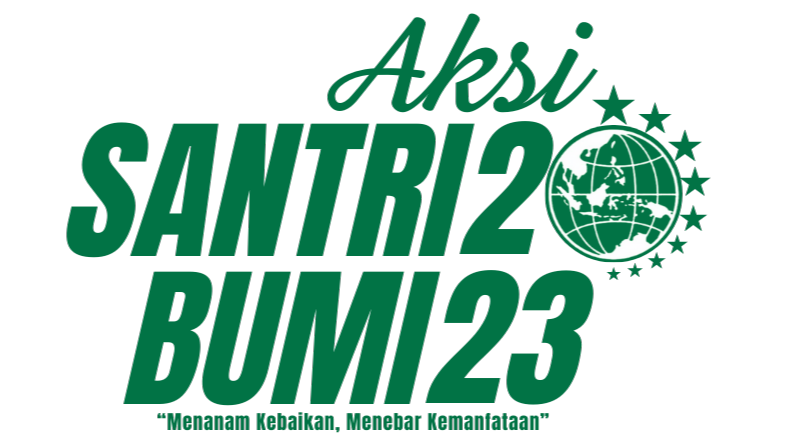

“Santri Bumi 2023: Menanam Kebaikan, Menebar Kemanfaatan” yang berlangsung pada hari Sabtu, 25 November 2023. Acara ini merupakan hasil kolaborasi antara Mujtama Madani Institute dengan Direktorat Rehabilitasi Perairan Darat dan Mangrove Kementrian Lingkungan Hidup dan Kehutanan, BPDAS Citarum Ciliwung, Dinas Lingkungan Hidup Provinsi Banten, dan Kampung Bahari Nusantara.
AKSI SANTRIBUMI (2023)